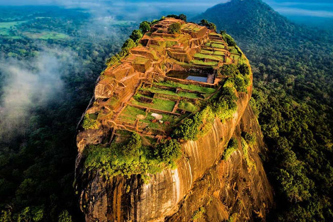
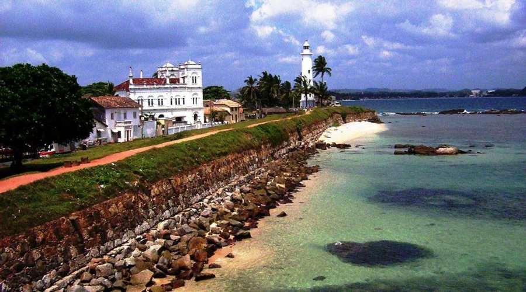
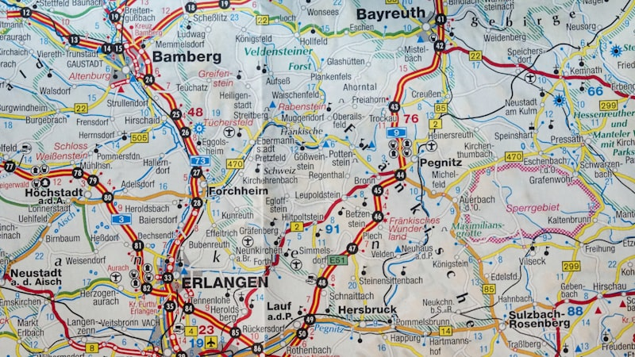
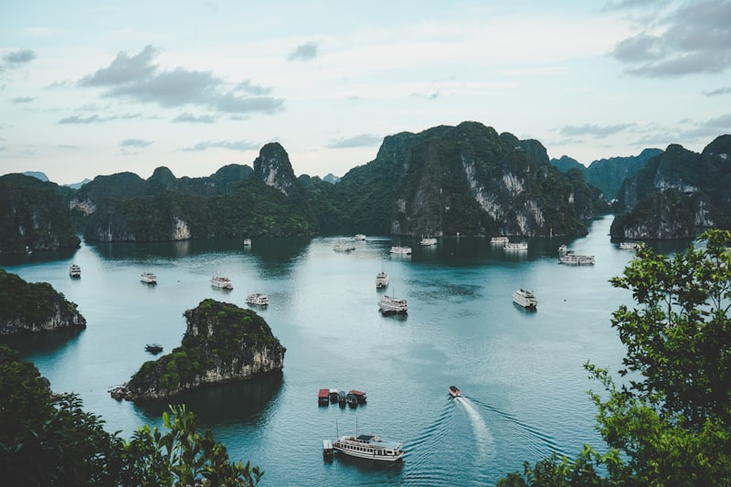
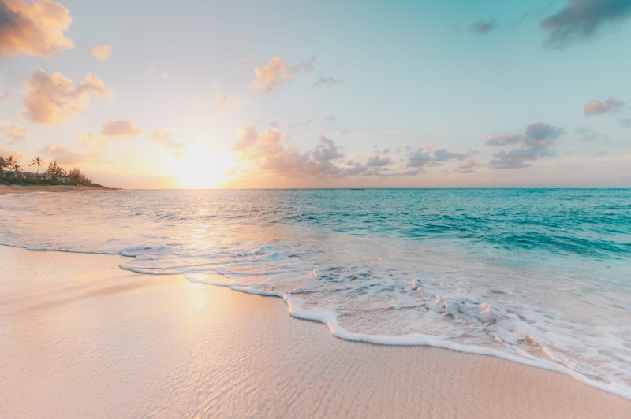
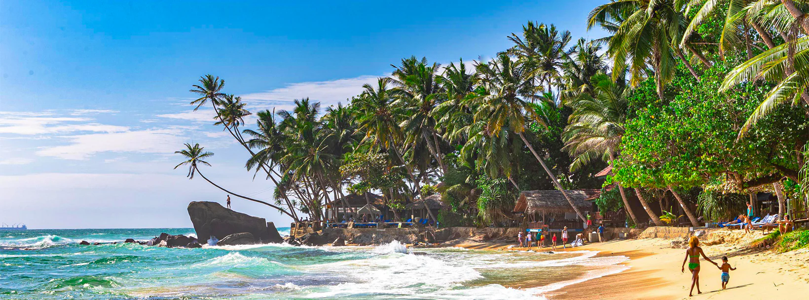
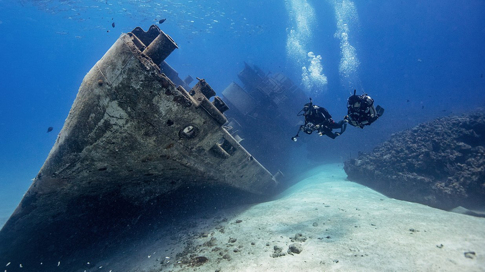

Editorial review: 17 November 2026. Full guides distinguish route suggestions from official booking information. Sri Lanka Tourism · Heritage tickets

Sigiriya
The legendary "Lion Rock" rises 200 meters above the plains. Climb 1,200 steps past ancient frescoes and the mirror wall to reach the 5th-century sky palace. One of Sri Lanka's most iconic sites.
Confirm current entrance charges, opening hours and transport fares with the operator before visiting.
Read the full travel guide →
Ella
A backpacker favorite nestled in the hill country. Hike Little Adam's Peak and Ella Rock, take the scenic Kandy–Ella train through tea plantations, and enjoy sunset views from Nine Arch Bridge.
Confirm current entrance charges, opening hours and transport fares with the operator before visiting.
Read the full travel guide →
Galle Fort
A 16th-century Dutch fort on the southwest coast. Walk the ramparts at sunset, explore boutique cafes and galleries, and soak in the blend of colonial architecture and Sri Lankan culture.
Confirm current entrance charges, opening hours and transport fares with the operator before visiting.
Read the full travel guide →
Kandy
The cultural heart of Sri Lanka and home to the Temple of the Sacred Tooth Relic. Visit the Royal Botanical Gardens, watch traditional Kandyan dance, and explore the scenic Kandy Lake.
Confirm current entrance charges, opening hours and transport fares with the operator before visiting.
Read the full travel guide →
Yala National Park
Sri Lanka's premier safari destination. Spot leopards, elephants, sloth bears, crocodiles, and hundreds of bird species. Best explored on a 4x4 safari at dawn or dusk.
Confirm current entrance charges, opening hours and transport fares with the operator before visiting.
Read the full travel guide →
Nuwara Eliya
"Little England" – cool climate, rolling tea estates, and colonial charm. Tour tea factories, visit Horton Plains and World's End, and enjoy a cup of Ceylon tea at 6,000 feet.
Confirm current entrance charges, opening hours and transport fares with the operator before visiting.

Mirissa
Palm-fringed beaches, whale watching (Nov–Apr), surfing, and vibrant nightlife. Paradise Beach and Coconut Tree Hill offer iconic sunset spots.
Confirm current entrance charges, opening hours and transport fares with the operator before visiting.

Polonnaruwa
Medieval capital with well-preserved ruins – temples, stupas, and the famous Gal Vihara Buddha statues. Best explored by bicycle within the archaeological park.
Confirm current entrance charges, opening hours and transport fares with the operator before visiting.

Unawatuna
Golden sand, calm waters, and coral reefs near Galle. Perfect for swimming, snorkeling, and beachside dining. Easy day trip from Galle Fort.
Confirm current entrance charges, opening hours and transport fares with the operator before visiting.

Kirinda Shipwreck Diving
Explore a fascinating underwater world near Kirinda, where divers can discover historic shipwreck remains surrounded by vibrant marine life. With clear waters and moderate currents, this site offers an exciting experience for certified divers looking for adventure along Sri Lanka's southern coast.